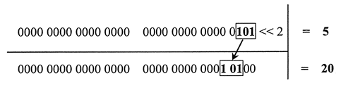
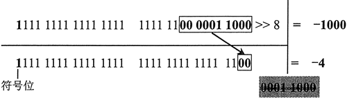

首页 > 编程笔记
JS移位运算符（<<、>>和>>>）
移位运算就是对二进制进行有规律低移位。移位运算可以设计很多奇妙的效果，在图形图像编程中应用广泛。
把数字 5 向左移动 2 位，则返回值为 20。
用算式进行演示，如图所示。
把数值 1000 向右移 8 位，则返回值为 3。
用算式进行演示，如图所示。

把数值 -1000 向右移 8 位，则返回值为 -4。
用算式进行演示，如图所示。当符号位值为 1 时，则有效位左侧的空位全部使用 1 进行填充。
下面两行表达式的返回值是相同的。
对于负数来说，无符号右移将使用 0 来填充所有的空位，同时会把负数作为正数来处理，所得结果会非常大所以，使用无符号右移运算符时要特别小心，避免意外错误。
用算式进行演示，如图所示。左侧空位不再用符号位的值来填充，而是用 0 来填充。

“<<”运算符
“<<”运算符执行左移位运算。在移位运算过程中，符号位始终保持不变。如果右侧空出位置，则自动填充为 0；超出 32 位的值，则自动丢弃。把数字 5 向左移动 2 位，则返回值为 20。
console.log(5 << 2); //返回值20
用算式进行演示，如图所示。

“>>”运算符
“>>”运算符执行有符号右移位运算。与左移运算操作相反，它把 32 位数字中的所有有效位整体右移，再使用符号位的值填充空位。移动过程中超出的值将被丢弃。把数值 1000 向右移 8 位，则返回值为 3。
console.log(1000 >> 8); //返回值3
用算式进行演示，如图所示。
把数值 -1000 向右移 8 位，则返回值为 -4。
console.log(-1000 >> 8); //返回值 -4
用算式进行演示，如图所示。当符号位值为 1 时，则有效位左侧的空位全部使用 1 进行填充。

“>>>”运算符
“>>>”运算符执行五符号右移位运算。它把无符号的 32 位整数所有数位整体右移。对于无符号数或正数右移运算，无符号右移与有符号右移运算的结果是相同的。下面两行表达式的返回值是相同的。
console.log(1000 >> 8); //返回值3 console.log(1000 >> 8); //返回值3
对于负数来说，无符号右移将使用 0 来填充所有的空位，同时会把负数作为正数来处理，所得结果会非常大所以，使用无符号右移运算符时要特别小心，避免意外错误。
console.log(-1000 >> 8); //返回值 -4 console.log(-1000 >>> 8); //返回值 16777212
用算式进行演示，如图所示。左侧空位不再用符号位的值来填充，而是用 0 来填充。
关注公众号「站长严长生」，在手机上阅读所有教程，随时随地都能学习。内含一款搜索神器，免费下载全网书籍和视频。

微信扫码关注公众号